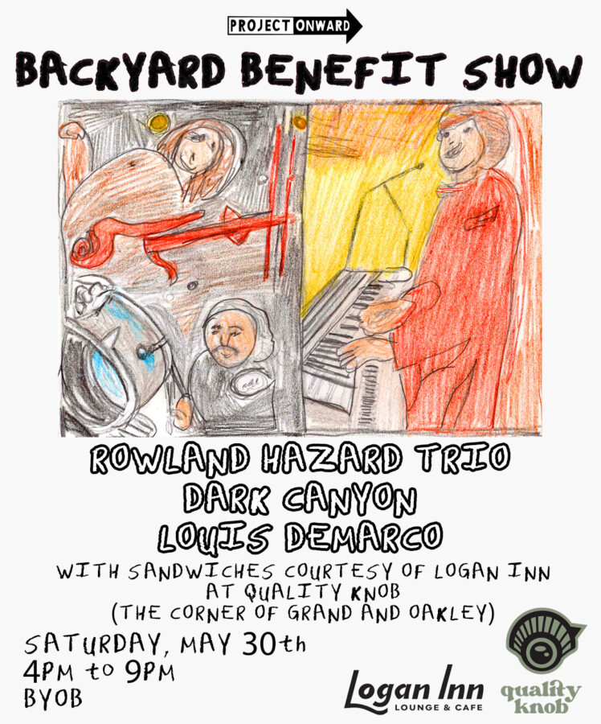

Backyard Fundraiser Show!
Next Saturday on May 30th, we’re hosting a special live fundraising event with Roland Hazard Trio ( featuring @nealfrancismusic on instagram ), Dark Canyon, and a solo show from our very own Louis Demarco!
Plus sandwiches courtesy of Logan Inn ( @loganinnchi ) , original artwork for sale, live portraits by Project Onward artists, exclusive merch, giveaway prizes and an unforgettable evening.
Location: Follow the signs at the corner of Grand and Oakley
Show begins: 4:00 PM
Tickets: $50 minimum donation (PURCHASE TICKETS WITH THE LINK IN OUR BIO)
100% of every ticket helps provide free studio space, art materials, mentorship, and professional opportunities for more than 60 adult artists whose lives are impacted by mental illness and/or developmental disabilities. It helps keep our studio accessible, our artists creating, and our mission moving onward. #chicago #chicagoevents #chicagomusic